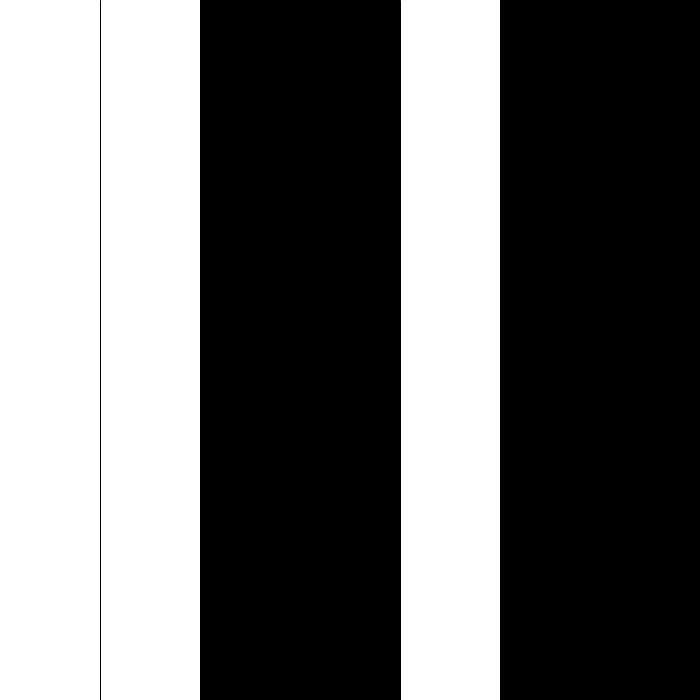
Divide a tela em 7 retângulos e os preenche de acordo com o valor em binário da contagem, 0 é prenchido de preto e 1 de branco.
De quantas formas é possível contar de 1 a 100 utilizando programação?
Este site compila resultados da proposta aberta realizada para artistas, programadores, designers e quem tiver interesse em executar o seguinte exercício:
Utilizando programação elaborar uma forma de visualizar uma contagem de 1 a 100.
Na listagem abaixo você pode acessar diferentes respostas a esse exercício e também baixar o código da respectiva resposta.
Atualmente o site conta com 38 formas, se você quiser participar deste projeto clique no botão abaixo para obter mais informações

Divide a tela em 7 retângulos e os preenche de acordo com o valor em binário da contagem, 0 é prenchido de preto e 1 de branco.
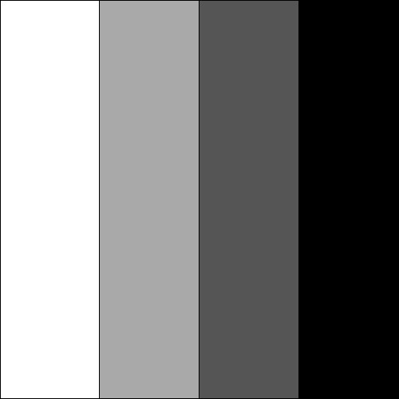
Divide a tela em retângulos de acordo com número da contagem. Os retângulos são preenchidos com uma escala de cinza iniciando com o branco e …
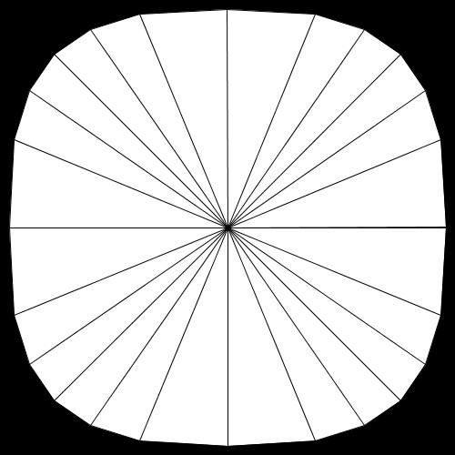
Cria uma forma a partir da formula da Superellipse para cada número da contagem. Depois de desenhada a forma, linhas partem do centro até os …
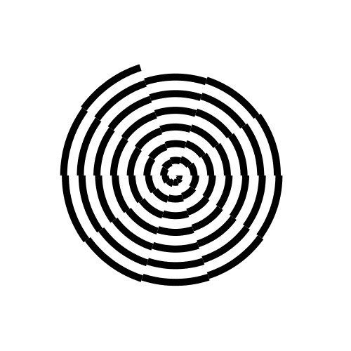
Para cada número da contagem cria um arco com mesmo ângulo de abertura e com raios proporcionais ao valor da contagem formando uma espiral.
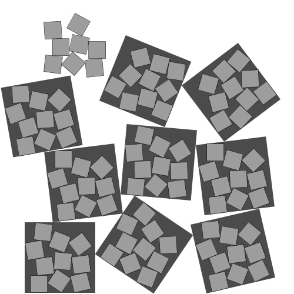
Empilha caixas ao acaso, dez de cada vez, em dez caixas que também são empilhados ao acaso.
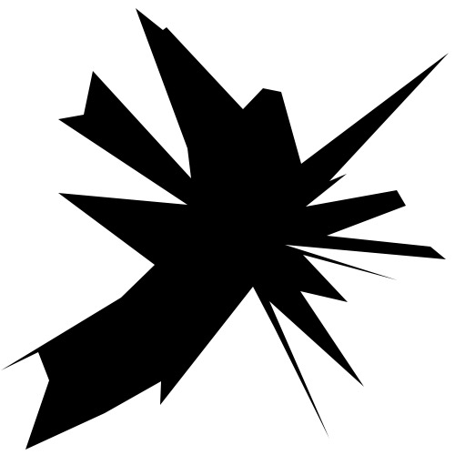
A cada ciclo, cria uma matriz com número equivalente de pontos, com coordenadas distribuídas aleatoriamente pelo plano; desenha um polígono …
Cria retângulos sobrepostos que preenchem o canvas em posições e ângulos gerados randomicamente.
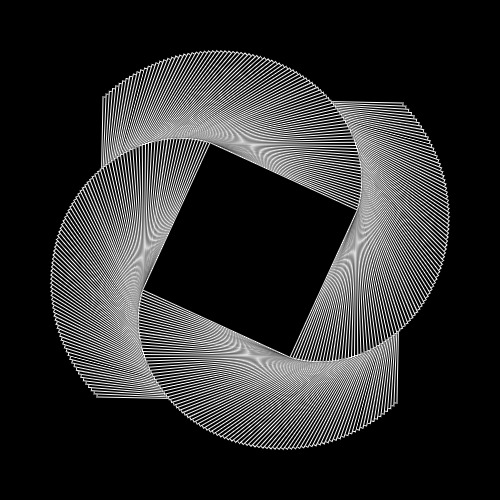
Este código simples gera um retângulo que gira sobre si mesmo quadro a quadro até chegar na contagem de 100.
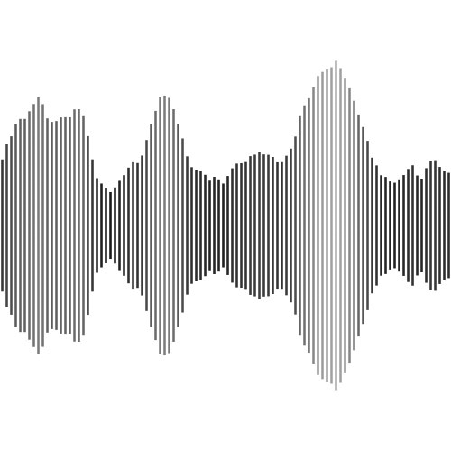
Cria retângulos a partir do eixo x utilizando o ruído de Perlin para definir altura e tom de cinza.
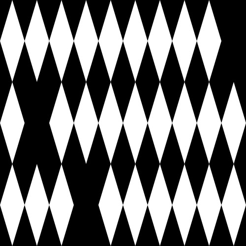
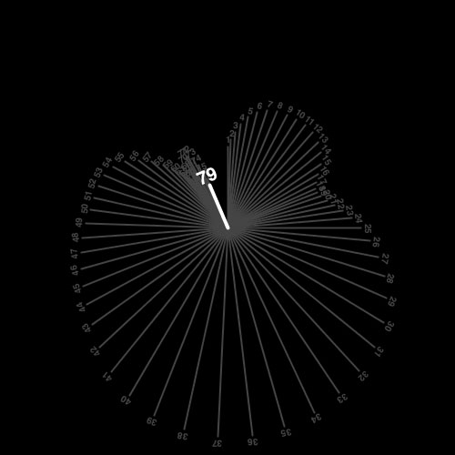
Contador que utiliza Perlin Noise pra dividir uma rotação completa em 100 partes desiguais.
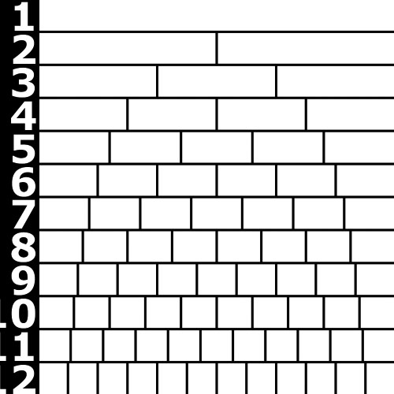
Contador que divide a altura pelo número contado – cada linha sub-dividida pelo número da linha.
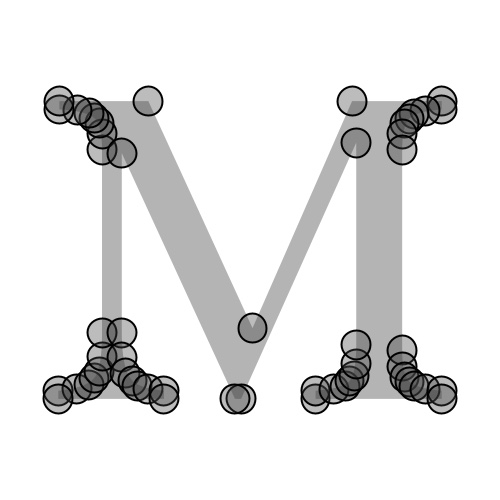
Aumenta a complexidade do desenho dos caracteres de diversas fontes com a variação de quantidade de pontos de 1 a 100.
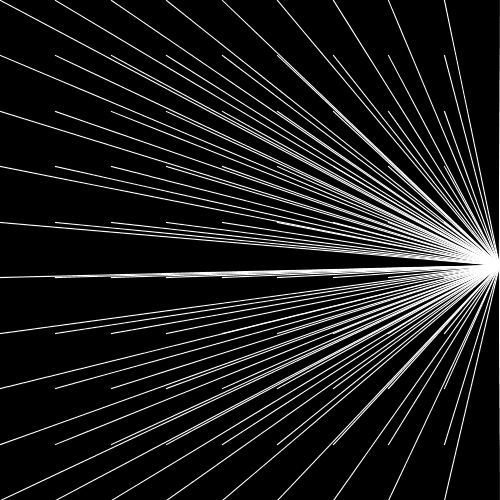
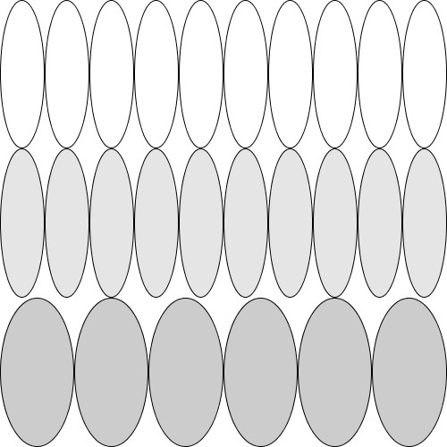
Divide o espaço da tela em colunas com elipses de unidades e linhas de dezenas. As linhas são coloridas em escala de cinza, atribuindo um …
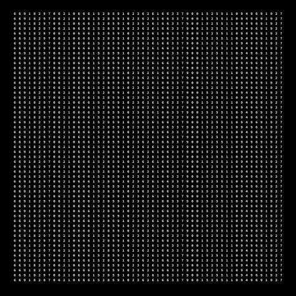
Cria sucessivamente linhas e colunas de uma grid preenchidas por algarismos aleatórios de 0 a 9.
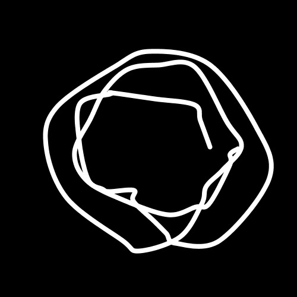
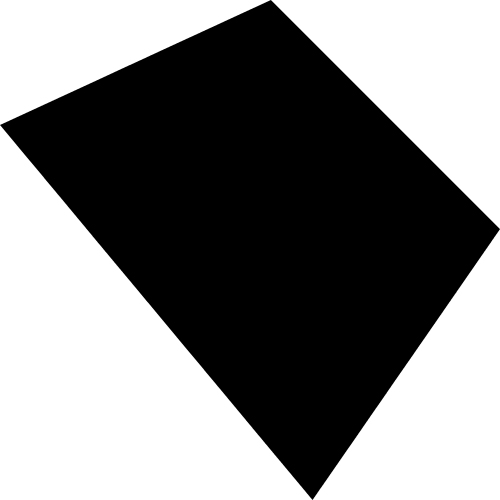
Quatro pontos são selecionados e conectados para formar um polígono. Cada ponto é selecionado aleatoriamente entre 25 possibilidades em cada …
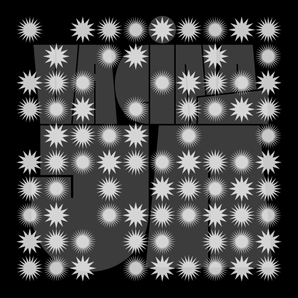
O código cria um grid com 100 visualizações do coronavírus que são diminuídas e, uma a uma, eliminadas em ordem randômica. Aos poucos, …
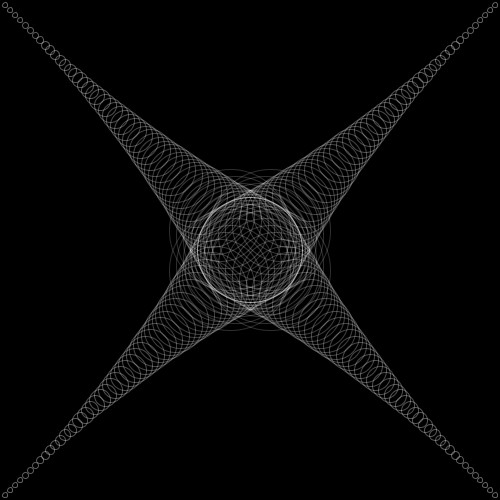
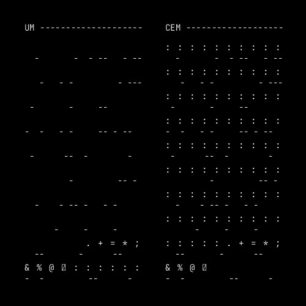
Pra esse projeto, resolvi replicar de forma imaginativa, algum tipo de dispositivo obsoleto, onde só caracteres ASCII pudessem ser …
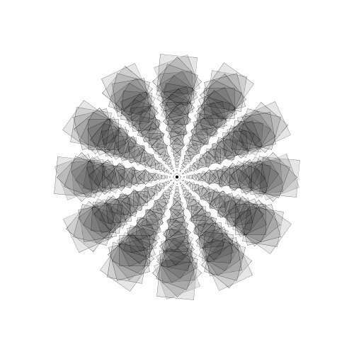
Retângulos com rotação, largura e altura recebendo o mesmo valor. A somatória de todos eles forma um kaleidoscópio.
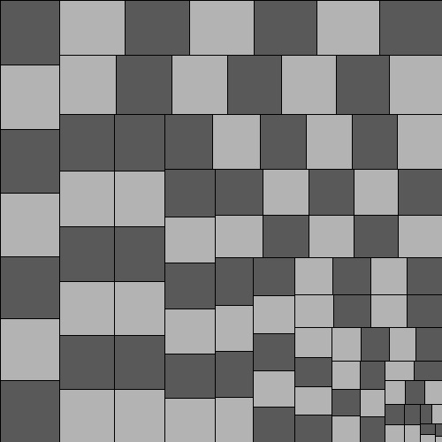
Treemaps mostrando o tamanho relativo de números variando de 1 a n, onde n varia de 1 a 100.
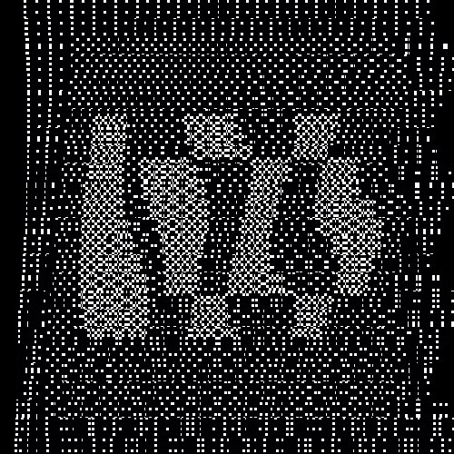
Uma mistura de dithering e ondas senoidais. Apesar da contagem de 1-100 ser a base que torna possível todos os movimentos contidos nessa …
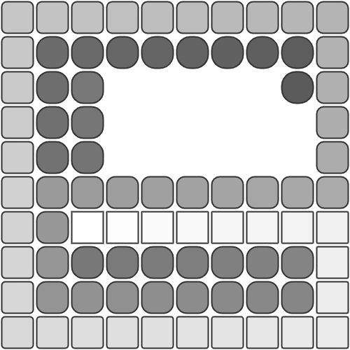
Um quadrado se transforma em um círculo, enquanto vaga aleatoriamente pelos espaços vagos do canvas, em 100 passos.
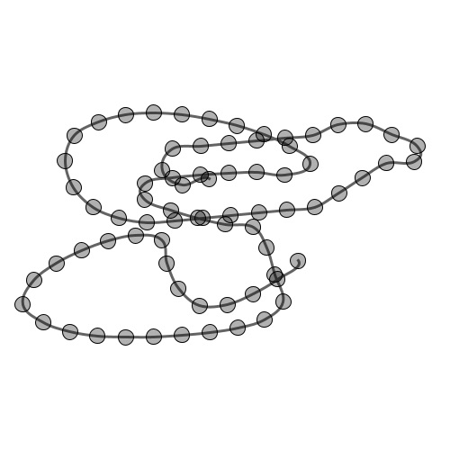
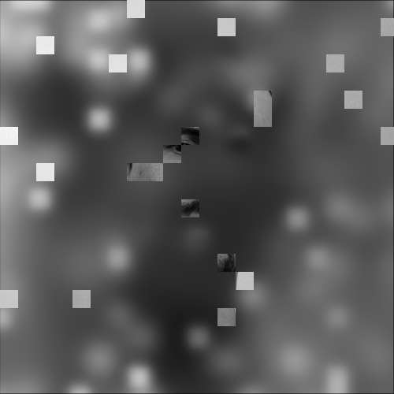
Pegue uma imagem. Divida seus lados em n partes, formando n² quadrados, n indo de 1 a 100. A cada rodada, pegue n quadrados aleatoriamente e …
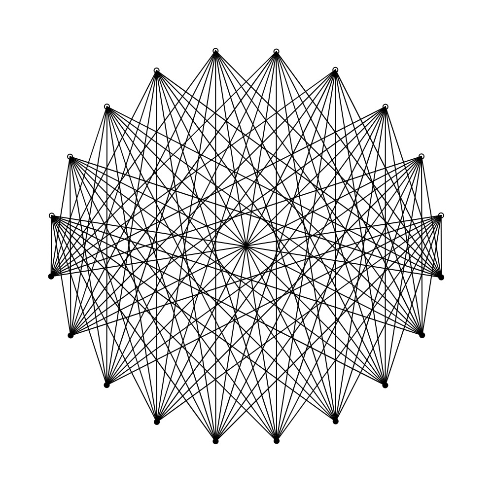
Cada ponto vazado emite um feixe de 10 linhas. Cada ponto inteiro recebe um feixe de 10 linhas. 10 x 10. E uma estrela no final.
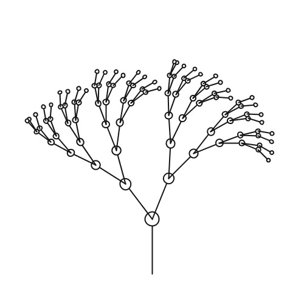
Uma árvore tem dois ramos. Cada ramo é uma árvore. Quantos ramos eu posso contar? O programa progressivamente cria uma árvore binária com um …
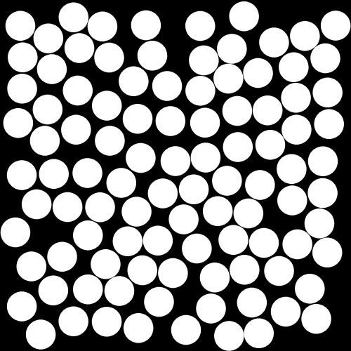
Bolinhas vão preenchendo o espaço. Por trás da visualização, está um conjunto de 100 pontos gerados com Poisson Disc Sampling. E o desenho …
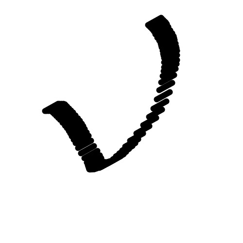
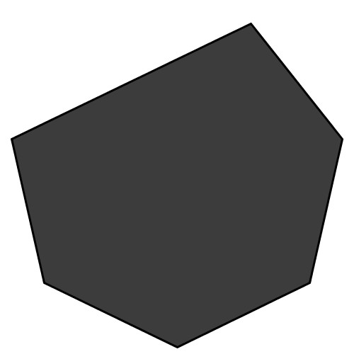
Mostra sete vértices regularmente espaçados em um círculo (formando um heptágono) e em seguida os 99 polígonos convexos que podem ser …
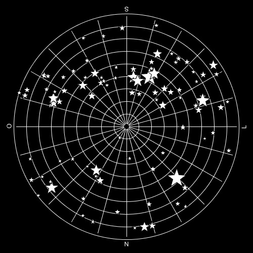
Exibe de 1 a 100 estrelas visíveis no céu a partir de São Paulo no dia 25/05/2021 as 19:30 de acordo com o site https://in-the-sky.org/ em …
A contagem é representada por barras verticais que vão crescendo dentro de um grid. Uma barra indica as unidades, outra as dezenas e a …
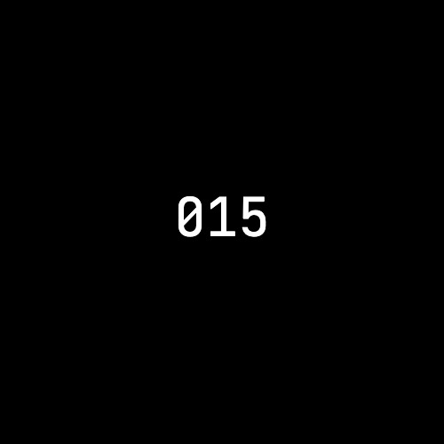
Indo de 1 a 100 por um caminho aleatório. A aleatoriedade é uma importante ferramenta para exploração e descoberta no desenvolvimento de …
Contagem de 1 a 100 num sistema de numeração quaternário. Cada dígito é um triângulo retângulo de 250 x 250 pixels, e seu valor é baseado no …
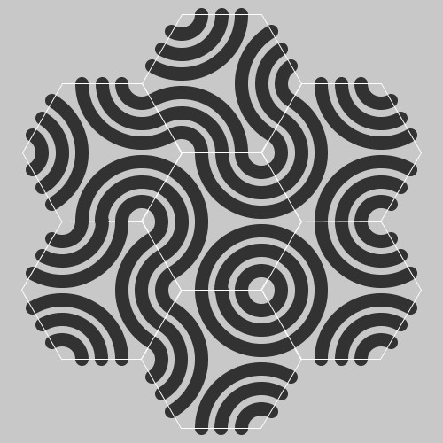
Contagem de 10 a 100 num sistema de numeração binário, onde cada bit é um módulo hexagonal com curvas, e seu valor é baseado no ângulo de …
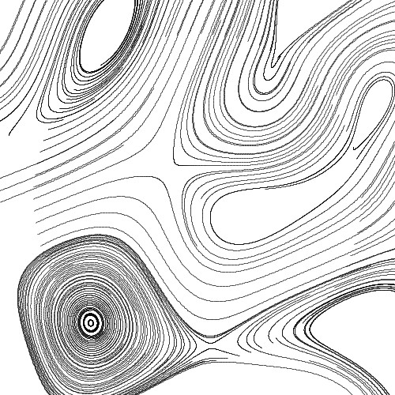